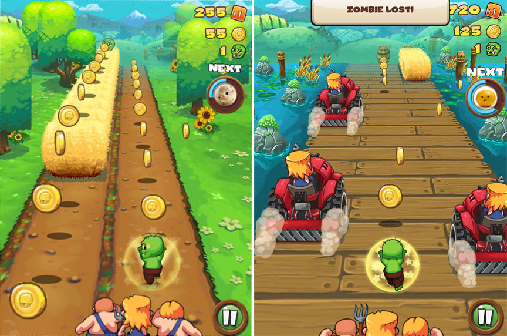
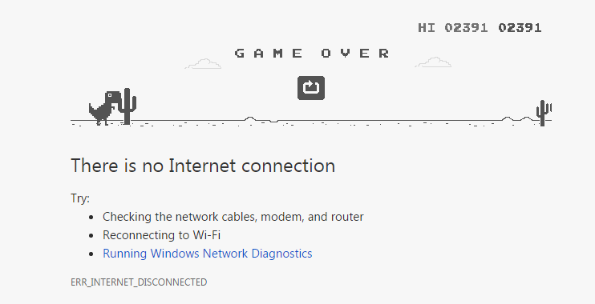

Endless runners can be side-scrolling, as in the genre's early titles, top-down, or 3D, but the player is placed in a neverending level in which the character automatically moves forward. The player's only form of control is to have the character dodge obstacles, either by moving out of the way or using a specific button.
Concepts
Some form of points, currency, or other rewards are gained over time by maneuvering in the level or simply staying alive longer. The game progressively increases in difficulty as time goes on. The player has a game over if they are hindered enough by the obstacles that they are "caught" by whatever is chasing them and die.
